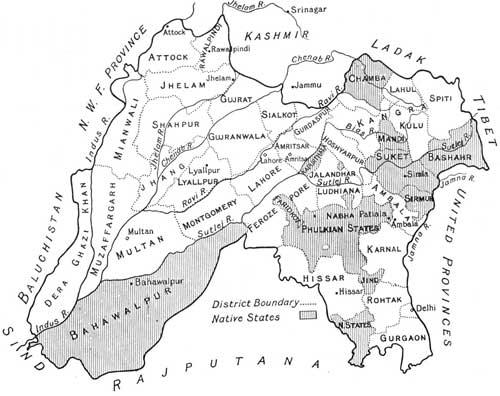

During the 18th century, a Sikh warrior by the name of Banda Singh Bahadur freed the state of Punjab as he fough of the Mughal Empire. For two centuries, the Sikh community and the Mughal Empire fought ferociously back in forth. However, with the Maratha Empire and British Raj rising in the South, it became harder for them to control their empire.
After the fall of Banda Singh Bahadur, it lead to the Mughal Empire being very small to the point that they became powerless. With all of this happening, many of the Mughals made peace with the Sikhs who lived in the forest for many years after the martyrdom of Banda Singh Bahadur. With the Mughal Monarch losing power every year, Sikh misls came into power and took over different parts of the Mughal Empire
Misls became stronger and started fighting amongst against each other after consuming the Mughal Empire. This begins age of the Misls where Sikhs are fighting against each other in order to defend their communities.
Misls borders would change constantly throughout the the decade as these warring states wanted all the power to themselves. There were many big and small misls. However, over a period of time, the small misls all died out and were consumed byother misls as they could not handle the miltary power the other misls had.
*Some Misls had the same flag or had no flags at all
| Misls | Leaders | Military Size | Capital | Founding Clan/Caste | Flags |
|---|---|---|---|---|---|
| Ahluwalia Misl | Jassa Singh Ahluwalia | 10,000 | Kapurthala | Aujla Jat | |
| Bhangi Misl | Bhuma Singh Dhillon and Hari Singh Dhillon | 30,000 | Amritsar | Dhillon Jat | None |
| Dallevalia Misl | Gulab Singh Dallewalia | 9,000 | Manjkar, Phillaur, and Bilga | Dhalleval Jat | None |
| Kanheya Misl | Jai Singh Sandhu and Rani Sada Kaur | 8,000 | Sohian | Sandhu Jat | None |
| Nakai Misl | Heera Singh Sandhu and Ran Singh Nakai | 7,000 | Chunian | Sandhu Jat | |
| Nishanvali Misl | Dasaundha Singh Gill | 2,000 | Ambala and Shahbad Markanda | Gill/Shergill Jat | |
| Panjgarhia Misl/Kanrrosinghia Misl | Sardar Karora Singh and Baghel Singh Dhaliwal | 10,000 | Shamchaurasi | Dhaliwal Jat and Sandhu Jat(Kalsia) | None |
| Phulkian Misl | Phul Singh Sidhu, Ala Singh, and Hamir Singh Brar | 5,000 | Patiala, Nabha, Jind, and Faridkot | Sidhu Jat and Brar Jat | |
| Ramgarhia Misl | Maharaja Jassa Singh Ramgarhia, Jdh Singh Ramgarhia, Tara Singh Ramgarhia, and Mangal Singh Ramgarhia | 5,000 | Sri Hargobindpur | Tarkans | |
| Shadheedan Misl | Baba Deep Singh | 5,000 | Shahzpur | Sandhu Jat | |
| Singhpuria Misl | Nawab Kapur Singh | 5,000 | Jalandhar | Virk Jat | |
| Sukerchakia Misl | Charat Singh, Maha Singh, Maharaja Ranjit Singh | 75,000 | Gujranwala | Sandhawalia Jat |